Adapting large-scale foundation flow and diffusion generative models to optimize task-specific objectives while preserving prior information is crucial for real-world applications such as molecular design, protein docking, and creative image generation. Existing principled fine-tuning methods aim to maximize the expected reward of generated samples, while retaining knowledge from the pre-trained model via KL-divergence regularization. In this work, we tackle the significantly more general problem of optimizing general utilities beyond average rewards, including risk-averse and novelty-seeking reward maximization, diversity measures for exploration, and experiment design objectives among others. Likewise, we consider more general ways to preserve prior information beyond KL-divergence, such as optimal transport distances and Rényi divergences. To this end, we introduce Flow Density Control (FDC), a simple algorithm that reduces this complex problem to a specific sequence of simpler fine-tuning tasks, each solvable via scalable established methods. We derive convergence guarantees for the proposed scheme under realistic assumptions by leveraging recent understanding of mirror flows. Finally, we validate our method on illustrative settings, text-to-image, and molecular design tasks, showing that it can steer pre-trained generative models to optimize objectives and solve practically relevant tasks beyond the reach of current fine-tuning schemes.
Current principled fine-tuning schemes for flow and diffusion models — Adjoint Matching and its relatives — target a single problem: maximize the expected reward of generated samples while staying close to the pre-trained model under a KL divergence. Formally, they solve
$$\arg\max_{\pi}\; \mathbb{E}_{x \sim p_1^\pi}[\,r(x)\,]\;-\;\alpha\, D_{\mathrm{KL}}\!\bigl(p_1^{\pi}\,\|\,p_1^{\mathrm{pre}}\bigr).$$
This is a natural target — but many practically relevant scientific and creative objectives are not linear expectations, and KL is not always the right way to keep the prior.
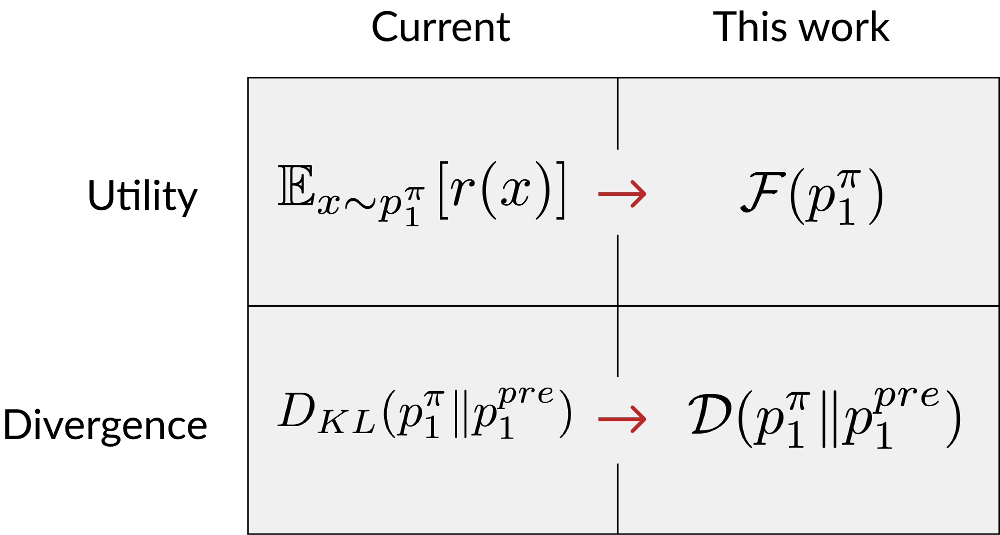
Concrete tasks that fall outside standard KL-regularized reward maximization include risk-averse generation (control the worst-case cost — validity, safety), novelty-seeking generation (control the upper tail — scientific discovery), manifold exploration and model de-biasing via entropy maximization, optimal experiment design, and optimal-transport-regularized reward maximization when the geometry of the design space is known (e.g. protein docking). All of these are captured by choosing appropriate $\mathcal{F}$ and $\mathcal{D}$ in GO.
Writing $\mathcal{G}(p_1^\pi) := \mathcal{F}(p_1^\pi) - \alpha\,\mathcal{D}(p_1^\pi\,\|\,p_1^{\mathrm{pre}})$, three strictly increasing problem classes emerge:
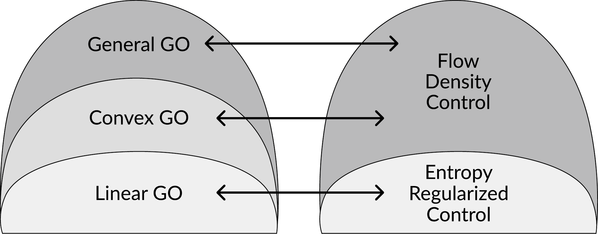
FDC solves GO by reduction: rather than designing a bespoke solver for each new $\mathcal{F},\mathcal{D}$ pair, it turns a non-linear generative optimization problem into a short sequence of the standard linear fine-tuning problems that entropy-regularized control already solves well.
Given a functional $\mathcal{G}: \mathcal{P}(\mathcal{X}) \to \mathbb{R}$, its first variation $\delta \mathcal{G}(\mu)$ is an infinite-dimensional gradient in the space of probability measures:
$$\mathcal{G}(\mu + \epsilon\,\mu') = \mathcal{G}(\mu) + \epsilon\,\langle \mu',\,\delta \mathcal{G}(\mu)\rangle + o(\epsilon).$$
Linearizing $\mathcal{G}$ at the current policy $\pi_{k-1}$ turns the outer non-linear problem into an inner Entropy-Regularized First Variation Maximization:
Linearize the functional. At the current policy $\pi_{k-1}$ inducing density $p_1^{k-1}$, compute (or estimate) the gradient of the first variation $\nabla_x g_k(x) := \nabla_x \delta \mathcal{G}(p_1^{k-1})(x)$. This scalar field plays the role of a per-sample reward gradient.
Solve one linear fine-tuning subproblem. Run a scalable entropy-regularized solver (e.g. Adjoint Matching) with $g_k$ as reward and strength $\eta_k$:
$$\pi_k \leftarrow \mathrm{LinearFineTuningSolver}(\nabla_x g_k,\, \eta_k,\, \pi_{k-1}).$$
Iterate. The next iteration re-linearizes $\mathcal{G}$ at $\pi_k$, so the sequence of linear surrogates gradually tracks the true non-linear landscape — this is mirror descent in the space of densities.
Return $\pi_K$. After $K$ inner problems, output the final policy. In our experiments $K$ is small (often $K = 2\ldots10$) — the heavy lifting is done by the linear solver.
Input: pre-trained flow $\pi^{\mathrm{pre}}$, utility functional $\mathcal{G} = \mathcal{F} - \alpha\,\mathcal{D}$, iterations $K$, regularization schedule $\{\eta_k\}_{k=1}^{K}$.
Among the practically-relevant functionals we consider, only Rényi divergences require estimating a density, and the recent Itô density estimator suffices. All others admit closed-form or sample-based gradients of the first variation. For example:
$$ \nabla_x\, \delta \mathcal{Q}(p^\pi)(x) \;=\; \begin{cases} -\nabla_x \log p^\pi(x) & \text{Entropy } (\mathcal{H})\\[4pt] \nabla_x r(x)\,\mathbf{1}\{r(x) \le q^r_\beta(p^\pi)\} & \text{CVaR}\\[4pt] \nabla_x \phi^\star(x),\;\; \phi^\star \in \arg\max_{\|\nabla \phi\|\le 1} \langle \phi,\, p^\pi - p^{\mathrm{pre}}\rangle & \text{Wasserstein-1} \end{cases} $$
Concretely: for entropy, the score is a known linear transform of the learned velocity field; for CVaR, any sample-based quantile estimator works; for $W_1$, $\phi^\star$ is precisely the discriminator in a Wasserstein-GAN and can be learned with standard methods.
A natural worry with linearize-and-solve schemes is that iterating linear surrogates may fail to converge, or that noise in the first-variation gradient and inexactness of the inner solver could derail the outer loop. Reformulating GO as constrained optimization over stochastic processes and invoking the notion of relative smoothness on the space of probability measures, FDC becomes a mirror-ascent scheme with an entropic mirror map. We analyze two regimes.
Concretely, this is — to our knowledge — the first convergence result for fine-tuning flow / diffusion generative models under general utility functionals and general divergences, and it is obtained by leveraging recent understanding of mirror flows.
Across four illustrative 2D settings and two high-dimensional real-world tasks, FDC steers pre-trained models to solve objectives beyond the reach of Adjoint Matching (AM), a classic linear fine-tuning scheme.
We fine-tune a pre-trained policy under $\mathrm{CVaR}_\beta$ with $\beta = 0.01$ — the expected cost in the worst 1% of samples. The cost field has a moderate-cost left band, a low-cost right zone, and thin catastrophic red stripes. Adjoint Matching drives the density into the low-cost right area but exposes it to rare extreme costs; FDC settles into the safer moderate-cost area, cutting the 1%-worst-case cost from 288.2 (AM) down to 90.0, well below the initial 262.5.
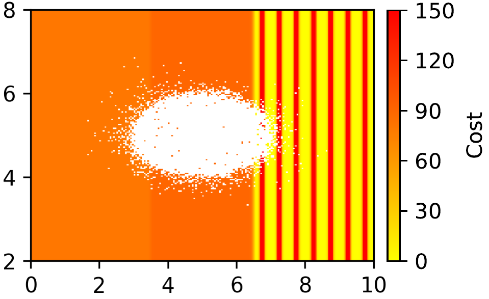
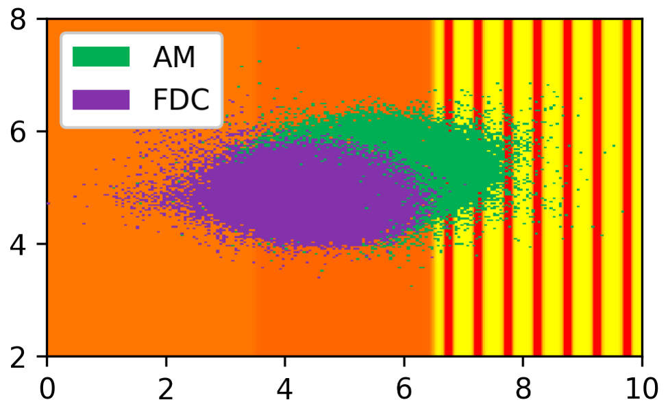
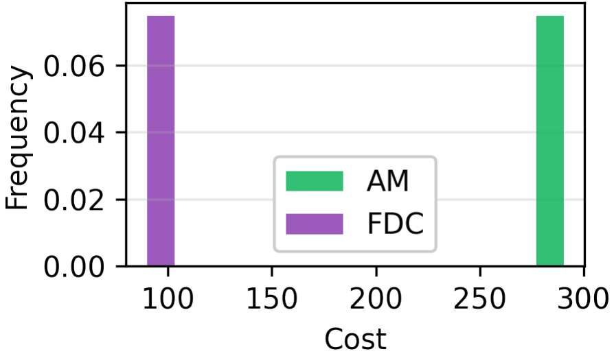
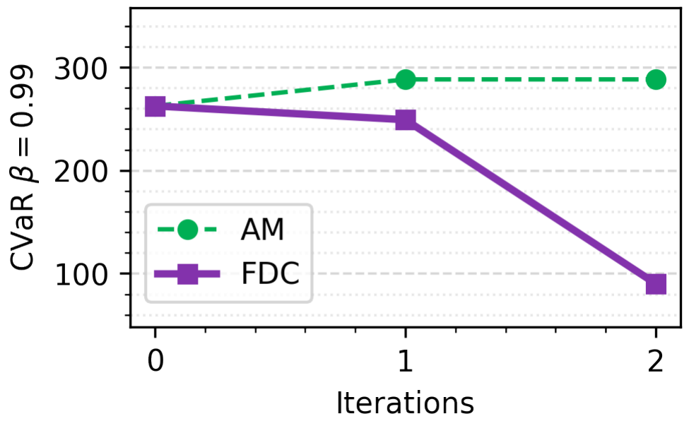
The mirror-image problem: maximize $\mathrm{SQ}_\beta$ with $\beta = 0.99$ — the expected reward in the top 1% of samples — over a reward field with a moderate central plateau and sparse extreme-reward spikes. AM drifts into the safe left basin and reaches a top-1% reward of 55.5. FDC instead pushes the density toward the spikes, elevating the top-1% reward to 596.1 — an order of magnitude gain over both AM and the initial 66.6.
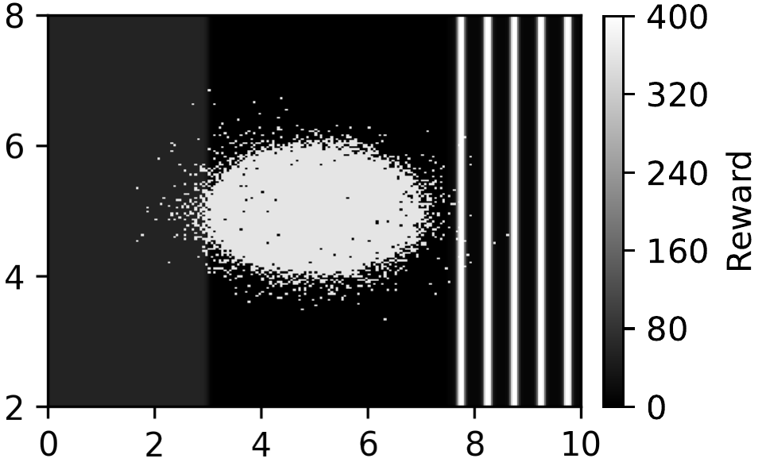
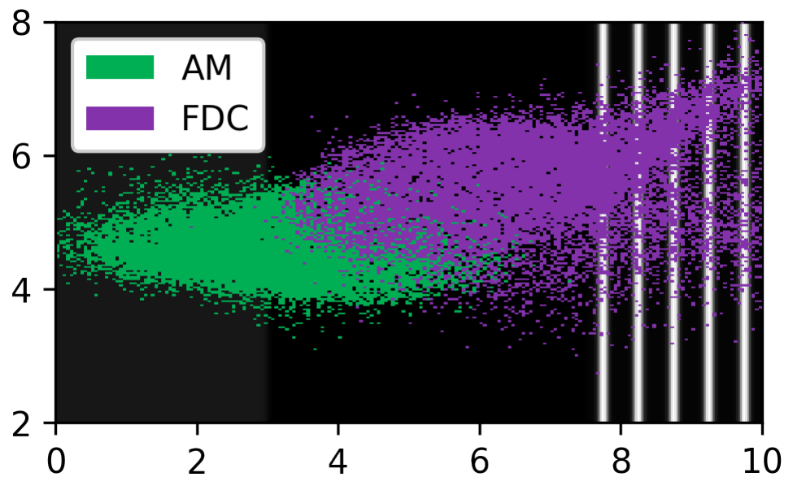
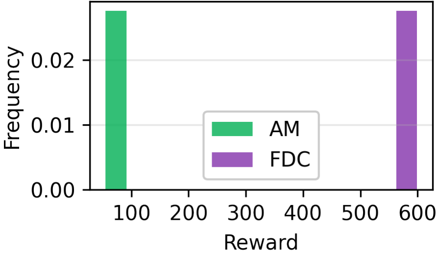
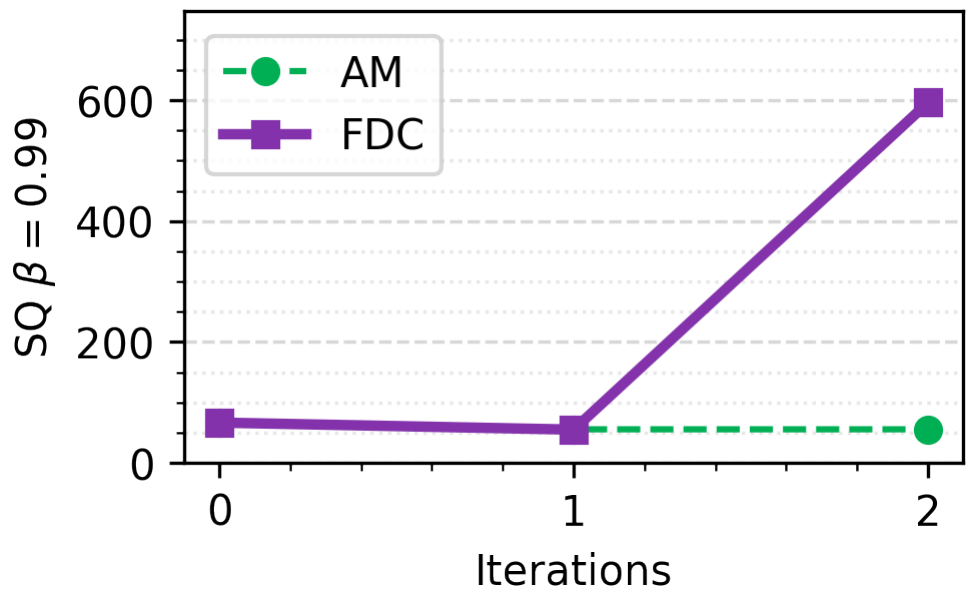
Same pre-trained model, same reward (top-right maximum), but two anisotropic $W_1$ distances: $d_A$ makes vertical moves more costly than horizontal ones, $d_B$ does the opposite. Both AM (with KL) and FDC-A (with $W_1^A$) reach an expected reward of $35.0$, but FDC-A incurs only $W_1^A = 1.95$ versus $4.67$ for AM, and its mean shift is 280% larger horizontally than vertically. Under $d_B$, FDC-B preferentially shifts the density upward. The geometry of the design space is respected.
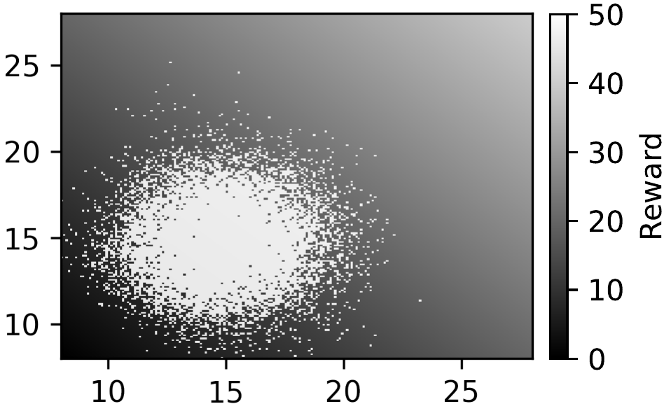
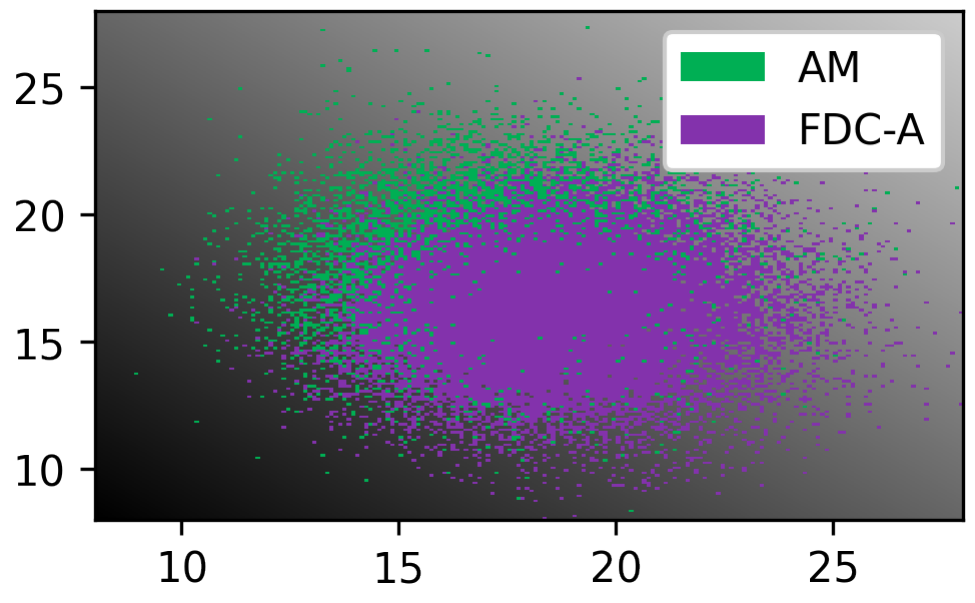
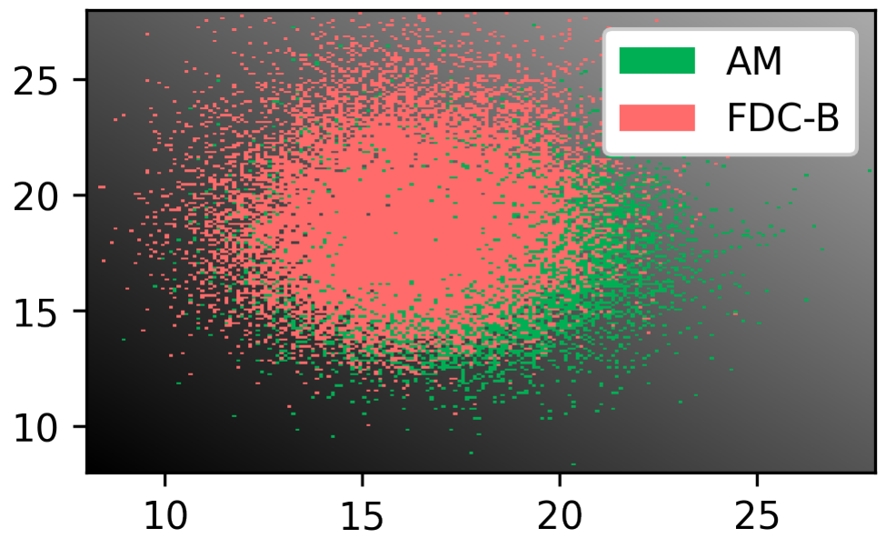
The pre-trained density concentrates mass on the left half of the manifold. Fine-tuning to maximize entropy with strength $\alpha$ shifts probability mass into low-coverage regions. Reducing $\alpha$ from $0.5$ to $0.0$ trades off staying close to the prior against exploring — Monte Carlo entropy grows from $6.78$ (pre) to $7.00$ ($\alpha=0.5$) to $7.14$ ($\alpha=0$). This gives explicit, knob-controllable exploration — a capability not supported by prior manifold-exploration methods.
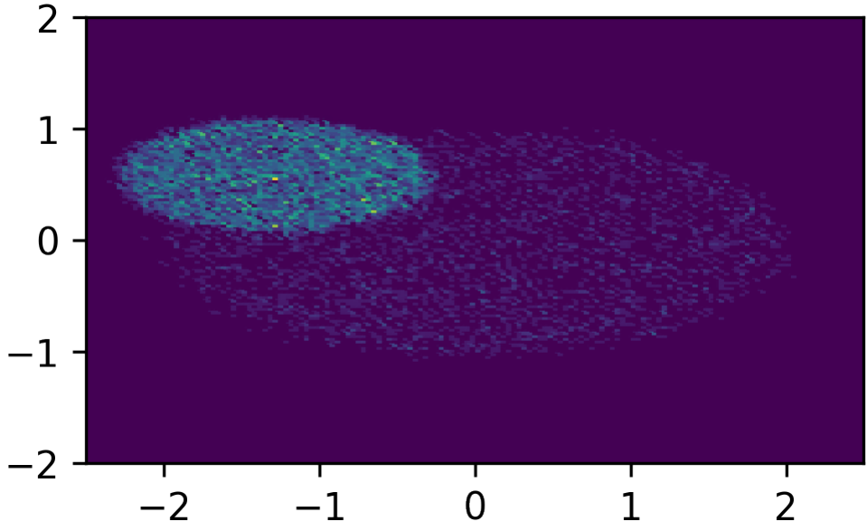
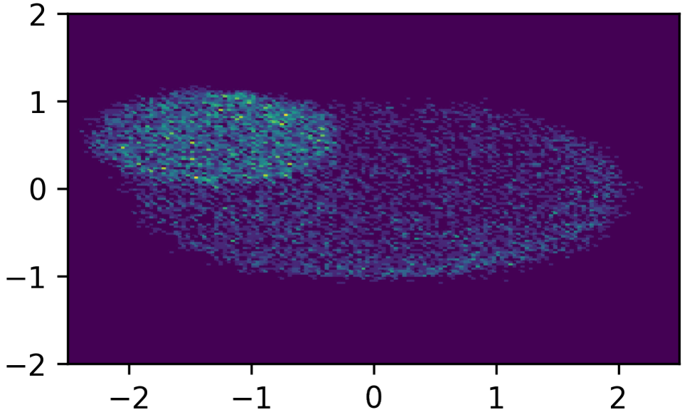
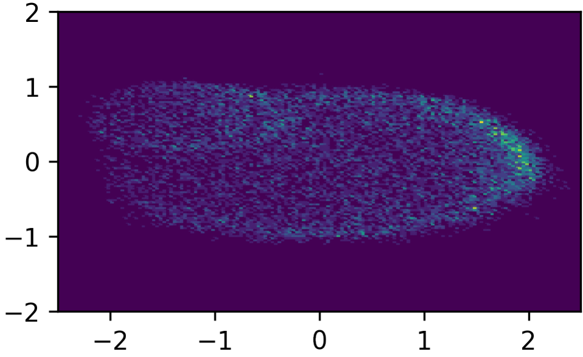
Scaling up: we fine-tune Stable Diffusion 1.4 with prompt "A creative bridge design" to maximize KL-regularized entropy ($\alpha = 0.001$) for $K = 2$ iterations. On a sample of 100 generations the Vendi diversity score climbs from 2.36 (pre-trained) to 2.47 (FDC), and the CLIP prompt-alignment score also improves from 0.19 to 0.22 — more diverse and more on-prompt.
Pre-trained Stable Diffusion 1.4
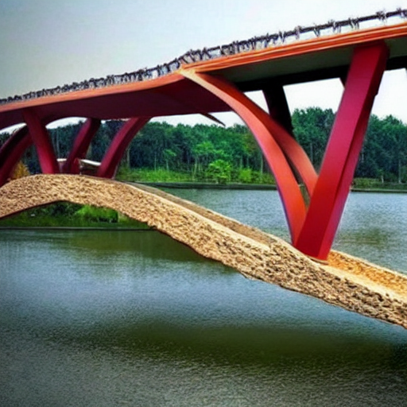
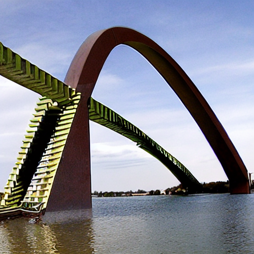
Stable Diffusion 1.4 fine-tuned with FDC (entropy, $\alpha = 0.001$)
We fine-tune FlowMol (pre-trained on QM9) to discover molecules minimizing single-point total energy computed at the GFN1-xTB level. We maximize the superquantile of the negative energy at $\beta = 0.998$ — we do not care about average sample quality, we care about the top 0.2% of designs. Consistent with the objective: AM has a higher mean negative energy (29.1) than FDC (27.5), but on the top-0.2% tail — where genuine leads live — FDC beats AM (41.8 vs. 39.7).
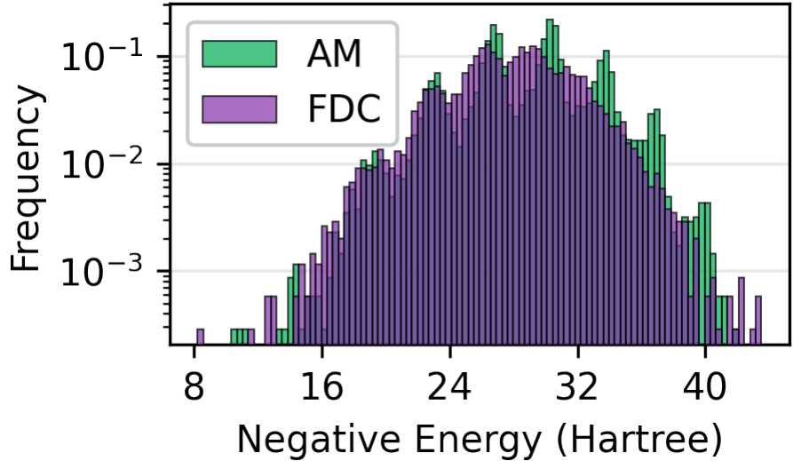
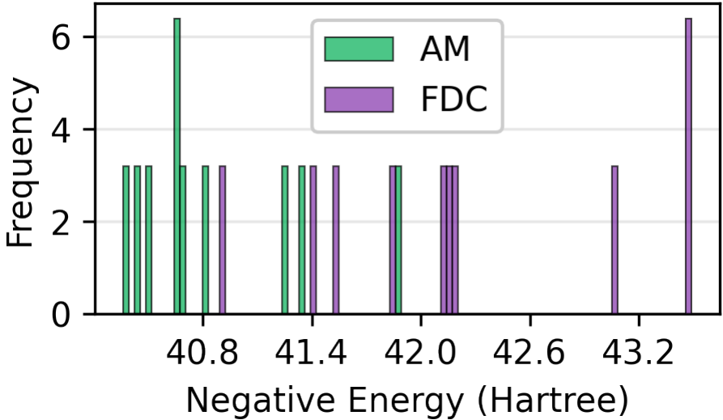
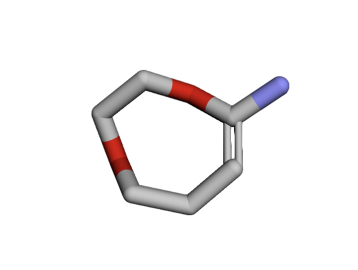
| Task & metric | Pre-trained | Adjoint Matching | FDC (ours) |
|---|---|---|---|
| CVaR $_{0.01}$ worst-case cost ↓ (toy) | 262.5 | 288.2 | 90.0 |
| SQ $_{0.99}$ best-case reward ↑ (toy) | 66.6 | 55.5 | 596.1 |
| $W_1^A$ distance ↓ (toy, matched $\mathbb{E}[r]$) | — | 4.67 | 1.95 |
| Entropy $\mathcal{H}(p^\pi)$ ↑ (toy) | 6.78 | — | 7.14 |
| Vendi diversity ↑ (SD 1.4, bridges) | 2.36 | — | 2.47 |
| CLIP prompt-alignment ↑ (SD 1.4, bridges) | 0.19 | — | 0.22 |
| Top-$0.2\%$ SQ negative energy ↑ (FlowMol, QM9) | 24.2 | 39.7 | 41.8 |
Bold marks the best value in each row. Numbers are means over seeds; see the paper for standard deviations and additional metrics. The pattern is consistent: whenever the target task is not plain expected-reward maximization, Adjoint Matching's linear objective misses it, while FDC's mirror-descent reduction gets it right.
@inproceedings{desanti2025flow,
title = {Flow Density Control: Generative Optimization Beyond Entropy-Regularized Fine-Tuning},
author = {De Santi, Riccardo and Vlastelica, Marin and Hsieh, Ya-Ping and Shen, Zebang and He, Niao and Krause, Andreas},
booktitle = {Advances in Neural Information Processing Systems (NeurIPS)},
year = {2025},
url = {https://arxiv.org/abs/2511.22640}
}